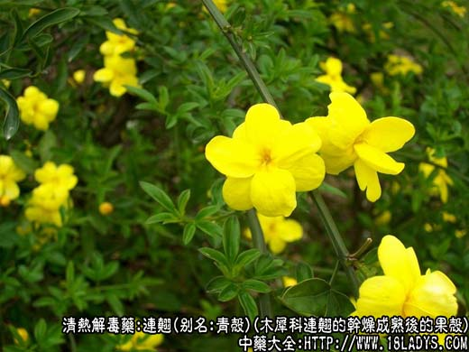
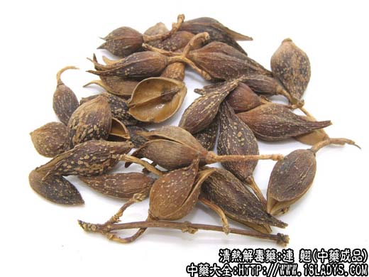
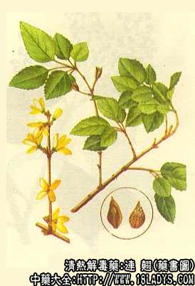

连翘为常用中药。《神农本草经》列为下品。现商品有青连翘、老连翘两种。原植物为一种。
别名：青壳、连召、老翘。
来源：为木犀科多年生落叶灌木连翘的干燥近成熟果实（青壳）和成熟后的果壳（老翘）。野生或栽培。
产地：主产于山西、河南，此外陕西、湖北、甘肃、河北、山东等省亦产。
性状鉴别：青翘，蒴果，狭卵形。长约1.5～2.5厘米，中部直径约6～10毫米。顶端尖，微开裂或不开裂，形如鸟喙。基部有短柄或已脱落，表面绿褐色，两面各有纵沟纹一条和多数凸起的微笑黄白色麻点。外壳略坚脆，易开裂，壳内含种子多枚，黄绿色，着生于中间纵隔膜上。种子略呈长棱形 ，一侧有膜翅，含粘油质。气微香，味苦微辛。
老翘：形态略与青翘相同，唯已成黄棕色或灰黄色。多开裂或已裂有两瓣，种子多已脱落。气微，味微苦辛。不含粘优质。
青翘以果实完整，均匀，青绿色，无枝梗者为佳。
主要成分：含连翘酚、齐墩果酸，以及一种甾醇化合物并含有大量维生素P。
功效与作用：1、抗菌。有效成分为连翘酚。对金黄色葡萄球菌和志贺氏痢疾杆菌的抗菌效力最大。对溶血性链球菌、肺炎双球菌、伤寒杆菌等亦有较强的抗菌作用。对结核杆菌的生长也有显著的抑制作用。对小白鼠实验性结核病有疗效。
2、抗病毒，对流感病毒有抑制作用。
3、强心、利尿。有效成分为齐墩果酸。
炮制：生用。
性味：苦、微寒。
归经：入心、小肠经。
功能：清心解热，消肿散结，利尿。
主治：外感风热，急性热病初起。烦热神昏，痈肿疮毒，瘰疠等症。
临床应用：为治疗热病和疮痈的重要药物。
1、用于外感或热病初起，症状较轻者。常配金银花等，以协助解表清热，方如银翘散，对较严重的温热病，在清热泻火或解毒方剂内，连翘也常用，但只起辅助作用。
2、用于治疗疖疮、痈肿，兼有发热等表实证者，最为合适。常配牛蒡子、栀子等，可疏风清热，消肿排脓，方如牛蒡解肌汤，又可配黄柏等研末制膏外用。
使用注意：在痈疽穿溃后不要用连翘，因此时病症属虚者较多，处理上一般多用托里法以增强身体抵抗力，而连翘苦寒，过服易伤正气，故不宜用。
金银花、连翘常合用，以加强清热解毒的作用。两者的微细区别是：银花味甘不伤胃（连翘则苦寒，少量服用虽可清热健胃，故保和丸用之），但过多仍会影响饮食；银花偏于解表，而连翘偏于清热胸膈膜里热。
用量：9～15g。
处方举例：1、牛蒡解肌汤《疡科心得集》：牛蒡子9g、连翘9g、薄荷3g（后下）、栀子9g、丹皮6g、石斛9g、玄参9g、夏枯草12g，水煎服，治因风热而引起的颈项部痈肿，有咽喉肿痛者尤为适用。
2、连翘双黄膏：连翘、黄柏、黄芩、五味子各15g、冰片1.5g，共研细末，加凡士林100克调匀，制成软膏，外用治疖肿初起。
附：连翘心为连翘的种子，味苦，含挥发油，研碎后发出芳香气味。连翘心具有中枢兴奋作用，温热病神昏谵语时用之，配莲子心等，方如清宫汤。见竹叶卷心项下。由于连翘心有兴奋中枢的作用，当连翘壳沾有连翘心成分时，服后有时会引起失眠，此外，连翘心还有健胃、止吐的作用。用量3～6g。注意：处方要写清楚，用连翘壳时写“连翘”，用其种子时写“连翘心”，壳和种子都用时写“带心连翘”。